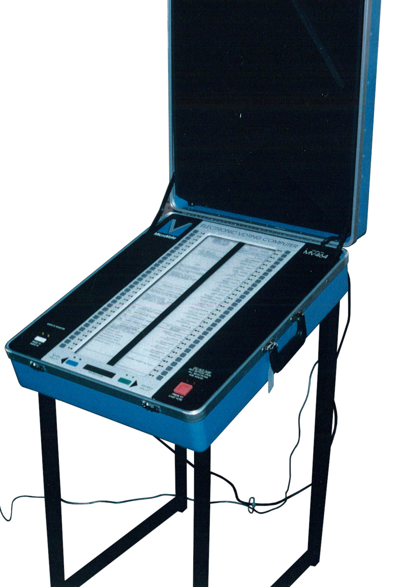

Microvote MV-464 Electronic Voting Computer
A push-button voting machine with a motor-driven paper scroll ballot display — democracy as a mechanical interface

Overview
The Microvote MV-464 is a direct-recording electronic (DRE) voting machine introduced in the mid-1980s by Microvote Corporation of Indianapolis, Indiana. It represents the first generation of consumer-grade electronic voting machines, bridging the gap between mechanical lever machines and modern touchscreen DREs. The machine uses a unique physical interface: ballot choices are printed on a paper scroll that is displayed behind a central glass window. A column of push buttons on each side of the window correspond to the ballot choices visible on the scroll. A motor-driven mechanism scrolls the paper left or right to display successive 'pages' of a multi-page ballot. The machine folds open with side panels that create a semi-enclosed voting booth, directly inheriting the form factor of earlier lever machines.
US Patent 4,649,264, filed in 1985 by inventor William H. Carson and assigned to Microvote Corporation, describes the key innovation: 'An electronic voting machine includes a roll of paper on which the ballot and candidates are printed. The paper is moved past a window by a motor drive. A voter operates push buttons aligned with the candidates to register votes.' The patent emphasizes the machine's ability to prevent overvoting and to store votes in non-volatile memory for later tabulation.
Microvote remained in production through the 1990s and into the early 2000s, with the MV-464 (and its successor models) seeing use in counties across the United States. The company was later acquired by Election Systems & Software (ES&S). The MV-464 is preserved in the collection of the Smithsonian's National Museum of American History and is documented in the Verified Voting Foundation's voting equipment database.
Deep dive
The MV-464's defining interface element is the paper scroll ballot display. Unlike a CRT or LCD screen, the ballot is printed on a continuous roll of paper inside the machine, visible through a glass window approximately 8 × 10 inches. A motor drive advances the scroll left or right to expose different 'pages' of the ballot. This hybrid approach — electronic vote recording with a physical paper display — was a pragmatic compromise: it allowed elections officials to produce ballots on standard office printers while giving voters a familiar paper-like reading experience, without the cost or complexity of a full electronic display.
Voters interact with the MV-464 through two columns of mechanical push buttons flanking the window, each aligned with the candidate or issue choices displayed on the scroll. The buttons are arranged in a 1:1 correspondence with the visible ballot items, eliminating the need for cursor navigation or touchscreen calibration. Pressing a button illuminates a small indicator light next to it, providing positive feedback that the vote has been registered. The machine enforces overvote prevention: if a voter presses buttons for two candidates in the same race, the first selection is automatically deselected. The interaction model is deliberately simple — press the button next to your choice, then press CAST VOTE — designed to be usable by voters of all ages and technical backgrounds.
The MV-464 occupies a pivotal position in voting technology history. Before it, mechanical lever voting machines (Shoup, AVM) dominated US elections. These machines used physical levers connected to mechanical odometer-style counters. The MV-464 replaced the mechanical lever with a push-button electrical switch and replaced the mechanical counter with electronic memory (battery-backed RAM). But it retained the physical ballot layout (paper scroll instead of lever labels), the booth form factor, and the overvote prevention interlock. It was a transitional machine: electronic under the hood, but still a physical, tangible interface that voters experienced as a familiar object.
Team & pioneers
- Microvote Corporation. Manufacturer based in Indianapolis, Indiana. Produced the MV-464 and descendant models through the 1990s. Later acquired by ES&S.
- William H. Carson. Inventor of the MV-464's paper-scroll ballot mechanism. US Patent 4,649,264 filed 1985, granted 1987.